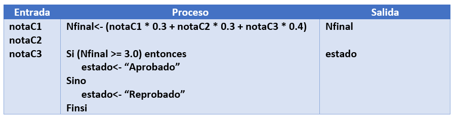
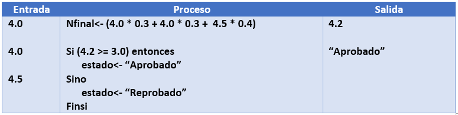
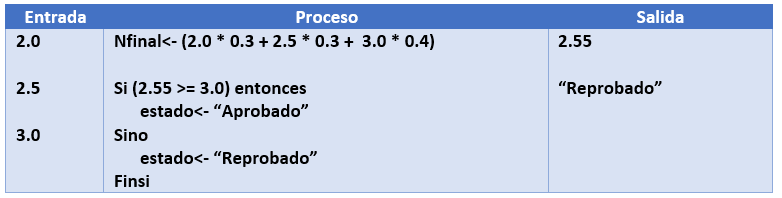
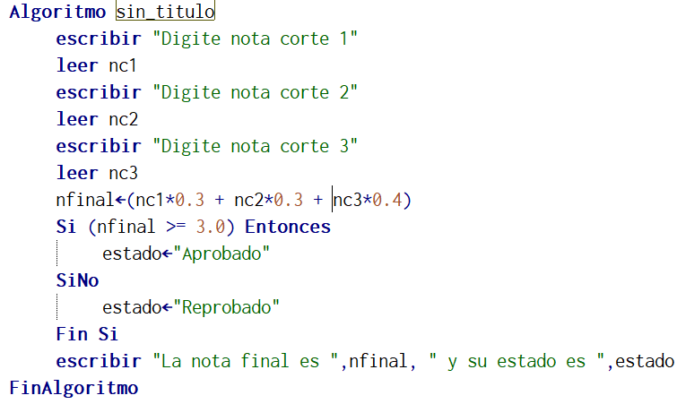
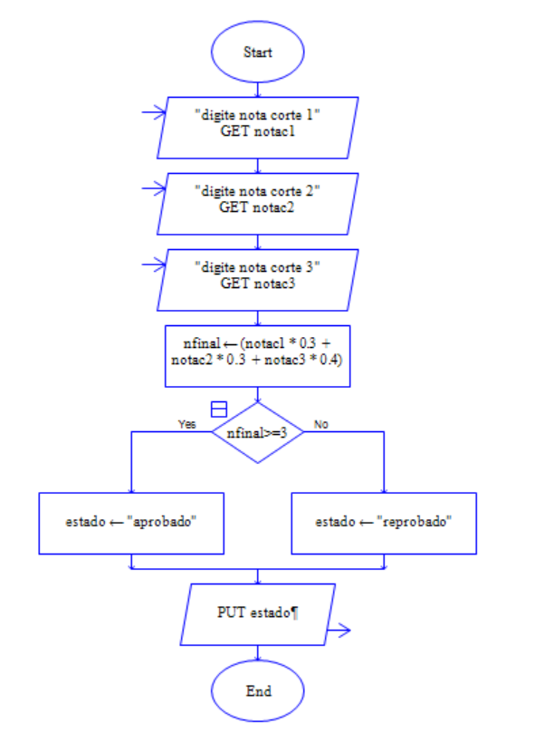
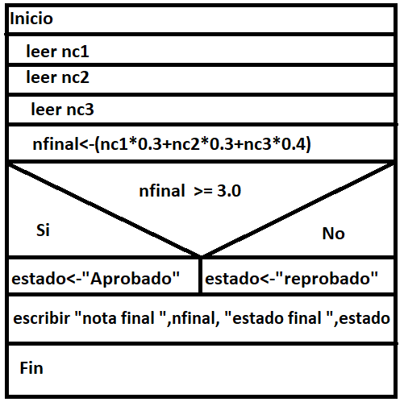

Realizar un algoritmo que permita obtener la nota definitiva de la asignatura de algoritmos teniendo en cuenta las notas de los tres periodos o cortes (corte 1 =30%, corte 2=30% corte 3 =40%). Finalmente se debe indicar si aprobó o no la asignatura sabiendo que se aprueba con nota final mínimo de 3.0
Solución: Para resolver el algoritmo es necesario que el usuario identifique cada una de las notas ya que con ellas se procede a calcular la nota final y también el estado
Análisis

Pruebas de escritorio
Prueba 1

Prueba 2

Psedudocodigo

Diagrama de flujo

Diagrama N/S

Simulador
Pseint
Dfd